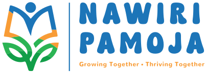
Gemeinsam wachsen.
Thriving together.
Wir unterstützen gemeinsam Kinder in Siaya County in Kenia dabei, zur Schule zu gehen, ohne dass Schulkosten im Weg stehen. Wir unterstützen sie dabei, Kinder zu sein und selbstbestimmt und mit gleichen Chancen aufzuwachsen. Wir fördern das Teilen von Wissen und Fähigkeiten und stärken, was die Gemeinschaft trägt und das Leben sicherer macht.
Together, we support children in Siaya County, Kenya, in going to school without the cost of school standing in the way. We support them in being children and in growing up self-determined and with equal opportunities. We encourage the sharing of knowledge and skills, and we strengthen what carries the community and makes life safer.
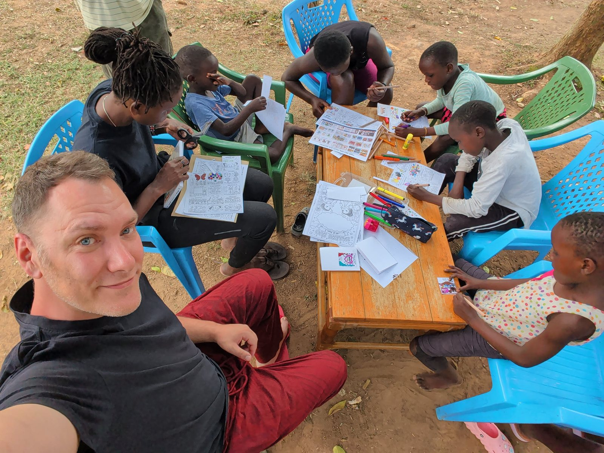
Zwei Sprachen, ein Satz.
Two languages, one phrase.
Beide Namen bedeuten dasselbe: gemeinsam aufblühen. Dholuo ist die Sprache der Luo, der Menschen in Siaya. Das ist für uns kein Slogan, sondern die Arbeitsweise: Ein Kind blüht nicht allein auf. Es braucht Schule, Familie und eine Gemeinschaft im Rücken.
Both names mean the same thing: thriving together. Dholuo is the language of the Luo, the people of Siaya. For us this is not a slogan but a way of working: a child doesn't thrive alone. They need school, family, and a community behind them.
Gemeinschaft ist kein Nullsummenspiel.
Community is not a zero-sum game.
Nawiri Pamoja wurde von Cathy und Philipp gemeinsam gegründet. Wir sind Freunde und teilen eine Überzeugung: Teilen ist kein Nullsummenspiel. Privilegien sind eine Sache, von der man mehr hat, wenn man sie teilt.
Unser Wissen gehört uns allen, und es zu teilen lässt es gedeihen. „Ich bin Farmerin, ich säe.“ hat Cathy gesagt, als wir uns kennengelernt haben. Sie meinte es doppeldeutig. Sie ist in einer Farmer-Community aufgewachsen. Und sie hat sich selbstständig Tech-Skills angeeignet, ist Gründerin und CEO von Tawari Digital Ltd., einem der bestbewerteten Apple- und Mobile-Phone-Repair-Shops in Nairobi. Heute gibt sie ihr Tech-Wissen nebenher in Kooperation mit einer Organisation an viele andere Kids weiter. Cathy sät Wissen. Certified Girl Tech!
An Weisheit zu gelangen kann einen hohen Preis kosten. Von der Weisheit anderer zu profitieren lässt sich mit Geld nicht kaufen. Und mehr Perspektiven erlangt man am besten, wenn man aufhört, es besser zu wissen.
Mehr gut ausgebildete Fachkräfte sind gut für alle. Mehr gute Ärzte zu haben, beispielsweise, ist gut für uns alle, die wir Ärzte brauchen. Und gut für die Person, die Arzt werden kann.
Nawiri Pamoja was founded jointly by Cathy and Philipp. We are friends and share one conviction: sharing is not a zero-sum game. Privileges are something you end up with more of when you share them.
Our knowledge belongs to all of us, and sharing it lets it thrive. “I'm a farmer, I sow,” Cathy said when we first met. She meant it in two ways. She grew up in a farming community. And she taught herself tech skills, is founder and CEO of Tawari Digital Ltd., one of the best-rated Apple and mobile phone repair shops in Nairobi. Today she passes on her tech knowledge on the side, in cooperation with an organization, to many other kids. Cathy sows knowledge. Certified Girl Tech!
Gaining wisdom can come at a high price. Benefiting from the wisdom of others can't be bought with money. And you gain new perspectives best by letting go of the need to know better.
More well-trained professionals are good for everyone. Having more good doctors, for example, is good for all of us who need doctors — and good for the person who gets the chance to become one.
Darum ist Nawiri Pamoja ein Projekt der Gemeinschaft. Zusammen haben wir mehr als genug von allem, wenn wir es gleich unter uns aufteilen. Daran arbeiten wir gemeinsam: im Verein Nawiri Pamoja in Berlin und in der CBO Dongruok Kanyakla in Siaya. Und mit allen, die mitmachen, etwas teilen und dazugehören.
That's why Nawiri Pamoja is a project of the community. Together we have more than enough of everything, if we share it equally among us. We work on this together: in the association Nawiri Pamoja in Berlin and in the CBO Dongruok Kanyakla in Siaya — and with everyone who joins in, shares something, and belongs.
Warum ein Verein?
Why an association?
Nawiri Pamoja e.V. wurde 2026 in Berlin gegründet und ist als gemeinnützig anerkannt. Der Verein schafft sichere Strukturen für alle Beteiligten: Eigene Konten, transparente Vorgänge und klare Regeln. Unser Zweck ist die Förderung von Bildung und Entwicklungszusammenarbeit.
Nawiri Pamoja e.V. was founded in Berlin in 2026 and is recognized as a non-profit. The association creates secure structures for everyone involved: its own accounts, transparent processes, and clear rules. Our purpose is promoting education and development cooperation.
Wie wir arbeiten
How we work
- Die Entscheidungen trifft die Gemeinschaft. Was ein Kind oder die Gemeinschaft braucht, entscheiden die Menschen, die es am besten wissen.
- Saubere Strukturen auf beiden Seiten: Satzungen und ein Memorandum of Understanding zwischen Nawiri und Dongruok.
- The community makes the decisions. What a child or the community needs is decided by the people who know best.
- Clean structures on both sides: statutes and a Memorandum of Understanding between Nawiri and Dongruok.
Wo wir stehen – und wohin wir wollen.
Where we are – and where we're headed.
Wir sind erst vor wenigen Monaten gestartet. Deshalb sagen wir klar, was schon läuft und was noch Ziele sind.
We only started a few months ago. That's why we are clear about what is already happening and what is still a goal.
Schule ohne Paywall
School without a paywall
Die ersten Kinder werden unterstützt, bei Schulgebühren, Uniform und Material. Unser Team in Siaya identifiziert gerade weitere Kinder, die Unterstützung brauchen.
The first children are being supported with school fees, uniforms, and materials. Our team in Siaya is currently identifying further children who need support.
Eine Gemeinschaft, in der wir wachsen.
A community we grow in.
Die ersten Workshops haben stattgefunden. Menschen vor Ort geben ihr eigenes Wissen weiter, zum Beispiel Mama Maria, die viele Fähigkeiten zu teilen hat und die Community stützt. Einen Community-LifeStraw für sicheres Wasser haben wir schon installiert.
The first workshops have taken place. People on the ground pass on their own knowledge — for example Mama Mary, who has many skills to share and supports the community. We have already installed a community LifeStraw for safe water.
Zugang zu Wissen und Infrastruktur
Access to knowledge and infrastructure
Ein Cyber-Raum, in dem Kinder selbst Skills lernen und Zugang zu Informationen haben, außerdem bessere Infrastruktur im Dorf. Was die Gemeinschaft stärkt, stärkt auch die Kinder.
A cyber room where children can learn skills themselves and access information, plus better infrastructure in the village. What strengthens the community strengthens the children.
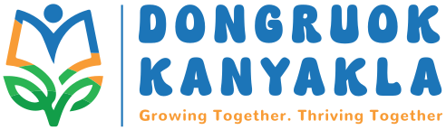
Dongruok Kanyakla, Siaya County
Dongruok Kanyakla ist eine eigenständige Community Based Organization in Alego Usonga, Siaya County — der Heimat von Cathys Familie. Cathy selbst lebt und arbeitet in Nairobi; zur Gemeinschaft in Siaya hat sie über ihre Familie eine enge, langjährige Verbindung.
Dongruok Kanyakla is an independent Community Based Organization in Alego Usonga, Siaya County — the home of Cathy's family. Cathy herself lives and works in Nairobi; her connection to the community in Siaya runs through her family, who have deep, long-standing roots there.
Geführt wird die CBO von einem gewählten Komitee: Cathy als Vorsitzende, ein Lehrer der Kinder, der Paralegal von Siaya und Maria, von allen in Siaya nur „Mama“ genannt — als Kassenwartin. Die Familien in der Gemeinschaft leben als Selbstversorger von der Landwirtschaft.
The CBO is run by an elected committee: Cathy as Chairperson, a teacher of the children, the paralegal of Siaya, and Mary — known to everyone in Siaya simply as “Mama” — as Treasurer. The families in the community are self-sufficient, living from farming.
- 01Identifiziert Kinder, die Unterstützung beim Schulbesuch brauchenIdentifies children who need support to attend school
- 02Entscheidet vor Ort, was Kinder und Familien brauchenDecides locally what children and families need
- 03Hält mit uns Rücksprache über die Verwendung der MittelConsults with us on how funds are used
Galerie
Gallery
Einblicke in unsere Arbeit vor Ort.
Glimpses of our work on the ground.
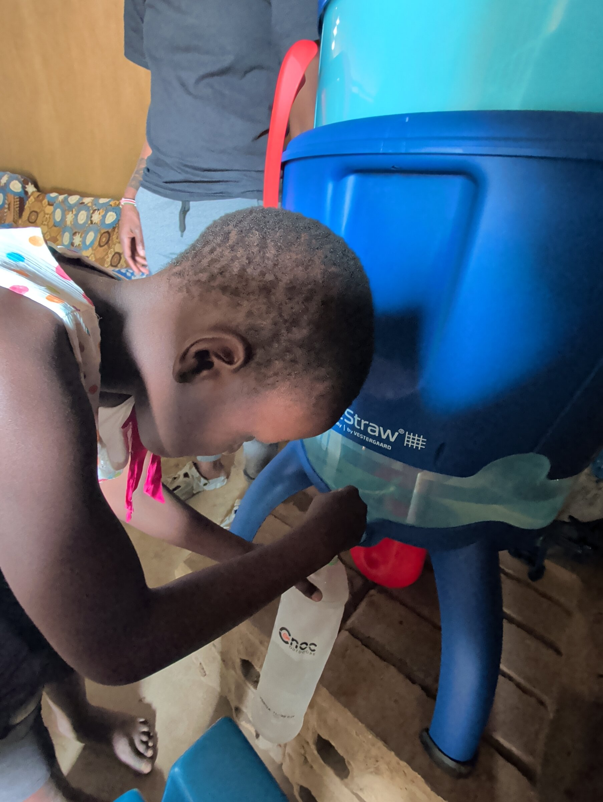
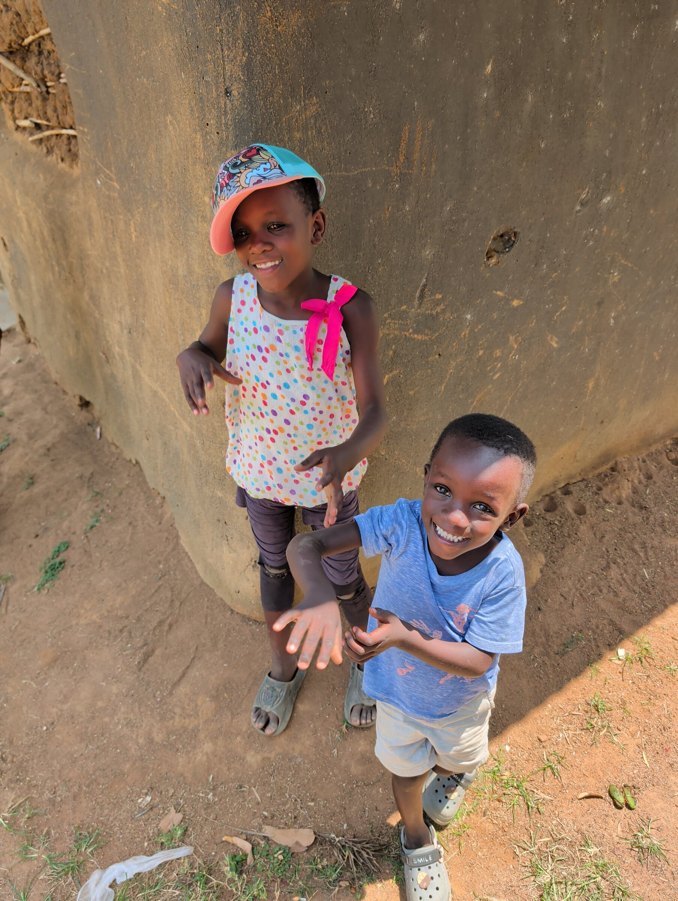
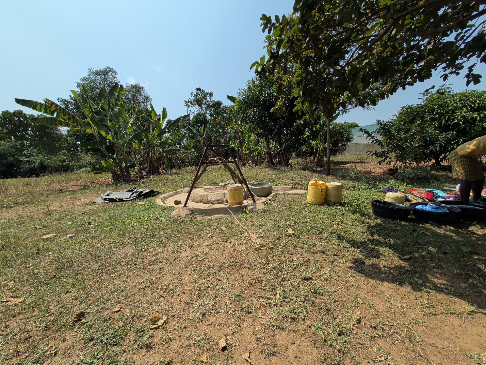
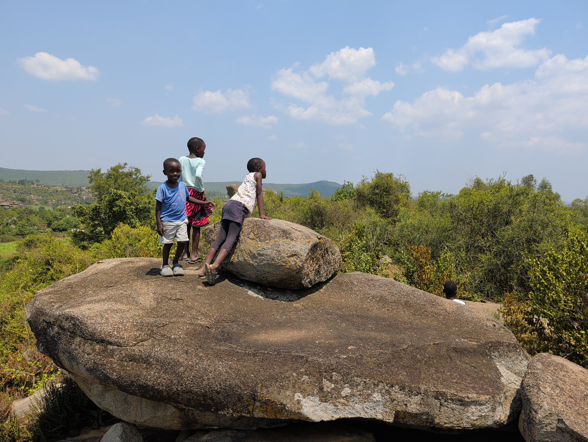
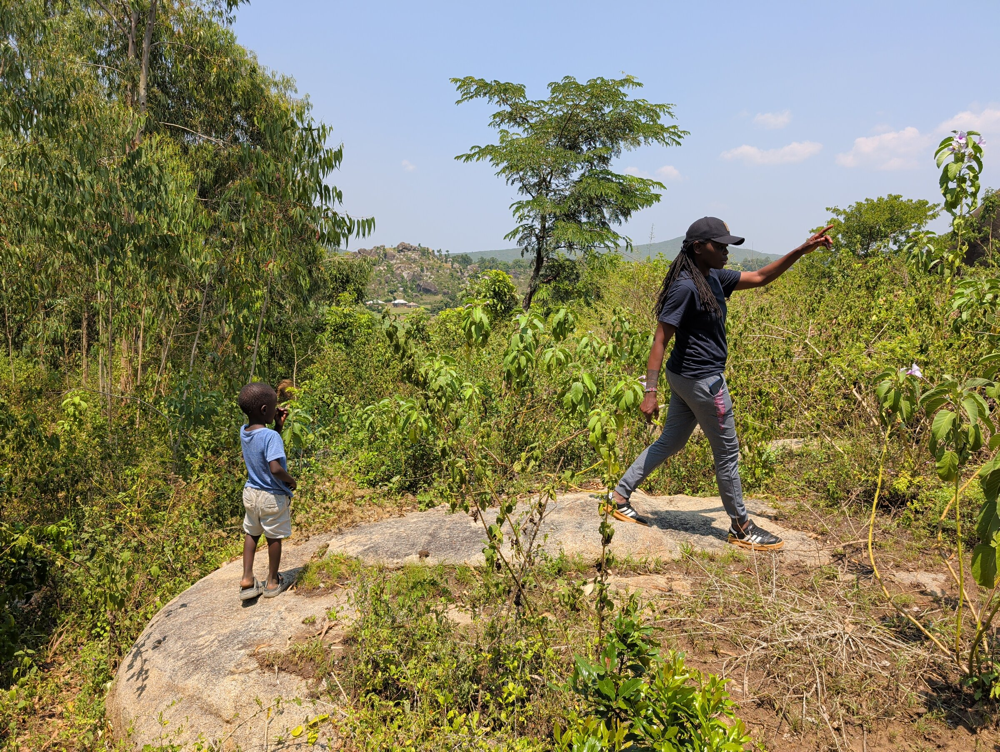
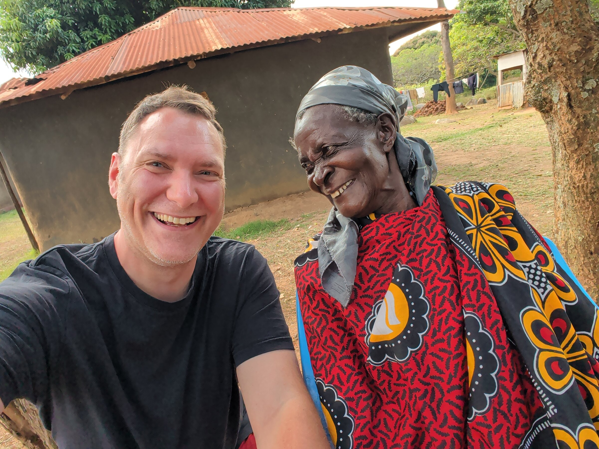
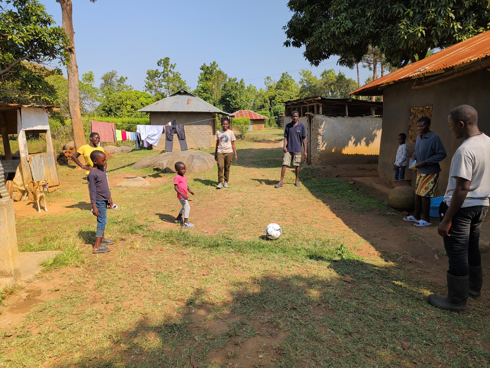
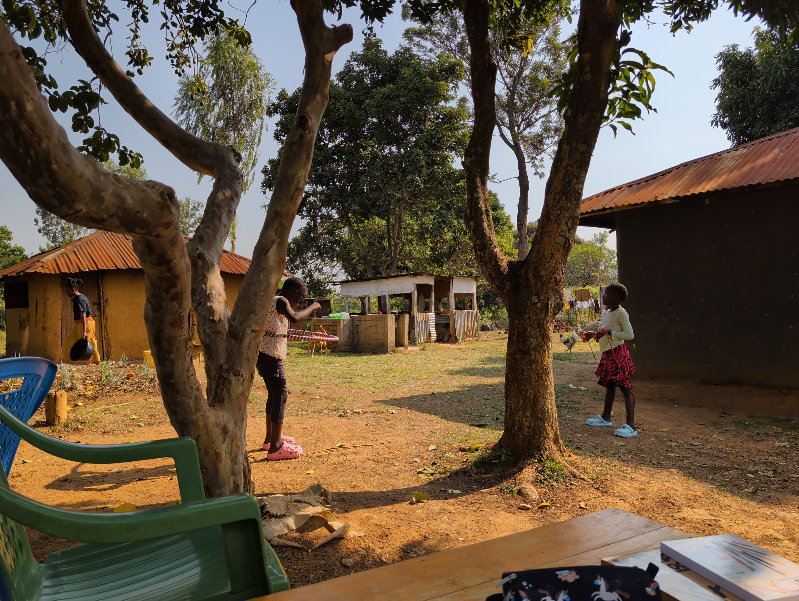
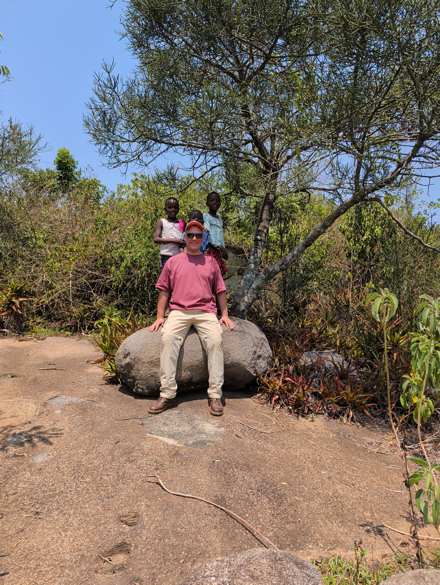
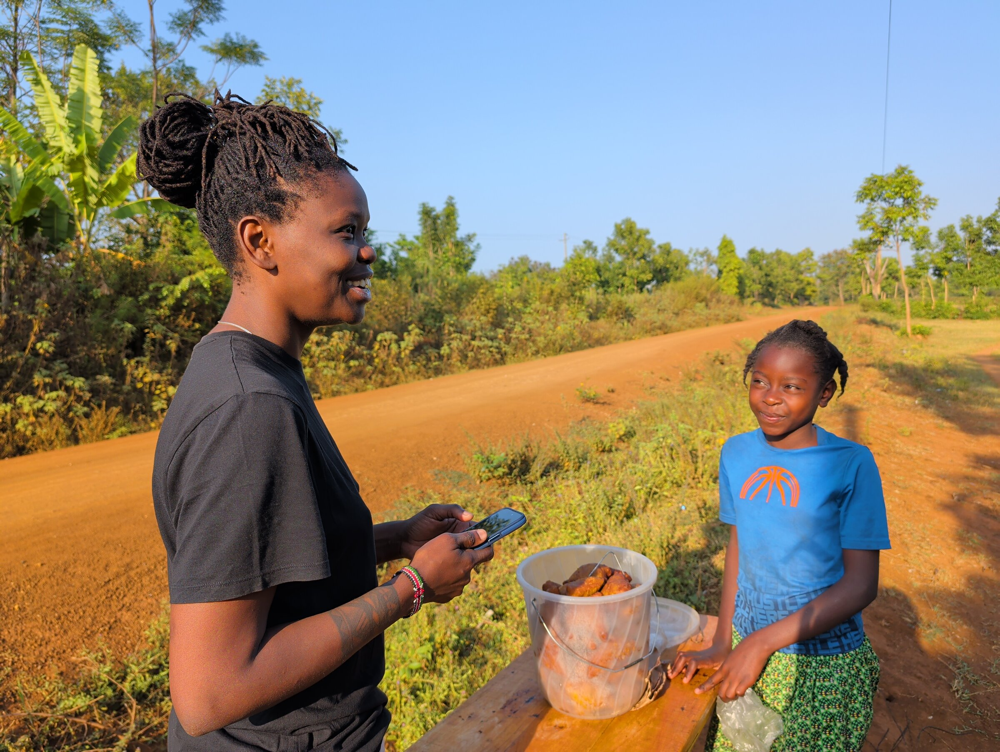
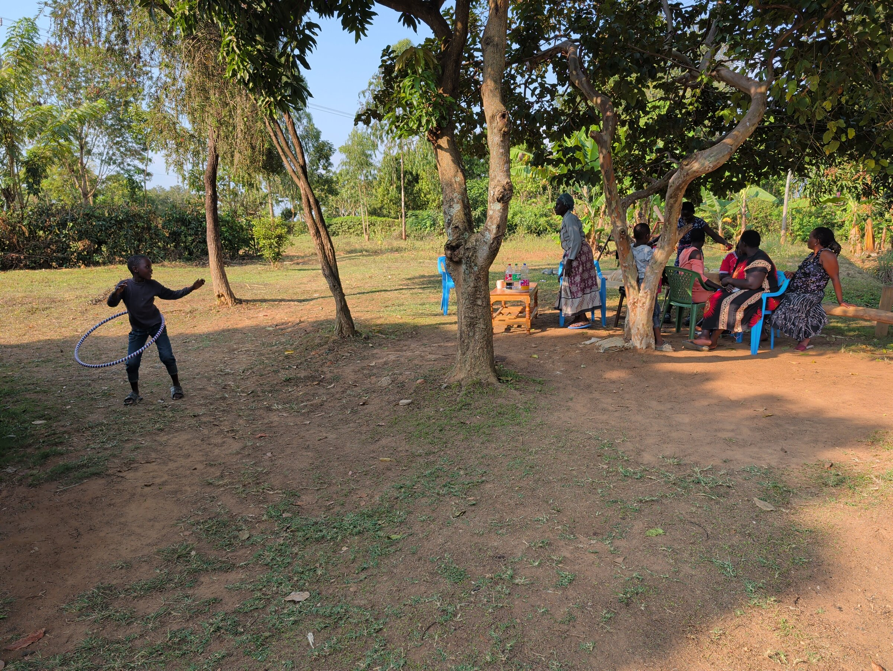
Spenden
Donate
Unser Spendenkonto wird gerade eingerichtet.
Our donation account is currently being set up.
Sobald das Vereinskonto steht, findest du hier die Kontodaten und Informationen zur Zuwendungsbestätigung. Bis dahin kannst du uns gerne direkt kontaktieren.
Once the association's bank account is active, you'll find the account details and information on donation receipts here. Until then, feel free to reach out to us directly.
Sag Hallo.
Say hello.
Kontakt
Contact
Fragen, Ideen oder einfach Hallo sagen – wir freuen uns.
Questions, ideas, or just want to say hello – we'd love to hear from you.
info@nawiri-pamoja.orgImpressum
Legal notice (Impressum)
13089 Berlin